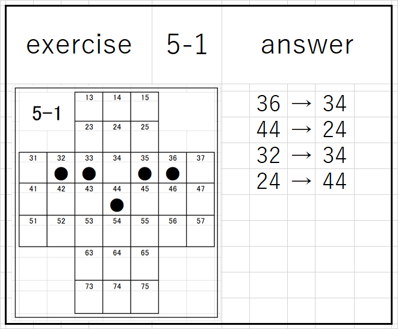

X

Rules
For information visit this wiki page. 
-
How to use the problem collection
How to play the game
Please open the number (5-1) from the problem
- Jump over the peg at position 36 to position 34 and move.
- Remove the peg at position 35. If you jump over, you can remove the peg.
- Move the pug at position 44 to position 24.
- Remove the peg at position 34.
- Move the peg at position 32 to position 34, move the peg at position 24 to position 44 ...
- Only one peg remained at the 44 position in the center. The peg can only be moved up, down, left and right. Cannot move diagonally
- ★ ★★ ★★★ Difficult problems are starred and these problems have answers
- For all issues, there is only one peg left on the board at the end of the game
- one of which is always in the 44th position in the center
- Problems 12-8, 13-11, 14-18, 18-4, 20-3 This is a particularly difficult problems, so I posted multiple answers.
- I love peg solitaire Take on the challenge Have a lot of fun
X
- Ansers
- * ** *** A guideline for difficulty There is an answer because it is a difficult problem
- For all issues, there is only one peg left on the board at the end of the game
- one of which is always in the 44th position in the center
- Problems 12-8, 13-11, 14-18, 18-4, 20-3 This is a particularly difficult problems, so I posted multiple answers.
- I love peg solitaire Take on the challenge Have a lot of fun
- 7-1 = 44to24; 33to53; 41to43; 53to33; 32to34; 24to44
- 7-2 = 33to53; 34to54; 53to55; 55to35; 36to34; 24to44
- 7-5 = 44to64; 52to54; 64to44; 44to42; 23to43; 42to44
- 7-10 = 54to56; 35to55; 74to54; 44to64; 56to54; 64to44
- 7-11 = 23to43; 44to42; 35to33; 25to23; 23to43; 42to44
- 7-12 = 35to33; 54to34; 34to32; 53to33; 32to34; 24to44
- 7-13 = 33to53; 53to55; 55to35; 35to33; 23to43; 42to44
- 7-17 = 31to33; 42to43; 34to32; 53to33; 32to34; 24to44